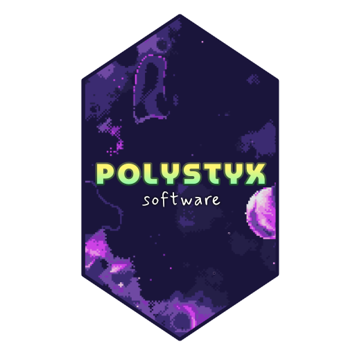

Currently developing Shores of Meridian - a very nsfw and very queer far-future scifi adult sim/rpgish game in a fresh and original setting.
If I post anything about the game, you can find those at Bsky, Itch or SubscribeStar above.
I probably won't post about SOM until a decent bit of the game is done. Look here or at Bsky/Itch/SubscribeStar every couple months if you're interested. Thank you 🙇♀️